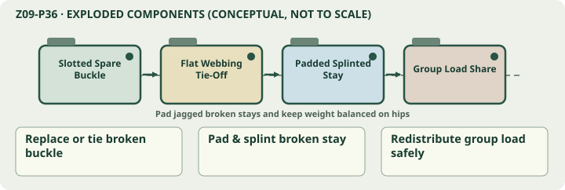

Z09-P36 · Tools and construction · New manuscript
Stabilize fractured pack frames, straps and buckles on the trail
Keep essential gear carried safely and evenly when a hip-belt buckle snaps, shoulder strap tears or frame stay shifts.
When it applies · Backcountry travel or evacuation marches when load-bearing backpack hardware breaks.
Equipment · Spare field-replaceable buckle or webbing loop, heavy utility cord, zip ties, strong thread/needle and repair tape.

Actions
- Replace snapped side-release hip-belt or sternum buckles using a slotted field-repair buckle, or tie the webbing tails securely through the remaining loop with a flat water-knot or doubled cord loop so weight stays balanced on hips.[K07, K09, ED]
- Lash a cracked external frame joint or popped stay cleanly with overlapping cord wraps or heavy zip ties, padding any sharp jagged metal or fiberglass end thoroughly so it cannot cut skin or pack fabric.[K07, K08, ED]
- Redistribute heavy items (water, food, shelter) among healthy companions if a pack fails badly so no one hikes unbalanced on slick terrain.[E11, K07, ED]
Failure recognition · Continuing miles down steep terrain with one broken shoulder strap swinging loose and a sharp snapped stay poking through the back panel.[K07, K08, E11]
Verify · Confirm padded sharp ends, balanced shoulder/hip weight distribution and secure knot or spare buckle holding under a test lift.[K07, ED]
Stop or change course · If a major pack collapse prevents carrying essential shelter, warmth or water safely, redistribute group loads and shorten the route to the nearest exit.[K07, E11, E02]
Evidence and editorial notes
- E02 · NPS · Ten Essentials (current web edition)
- Section: Navigation; insulation; emergency shelter; emergency food and water · Conditions: Outdoor trips; adjust kit to season and route
Support: Carry essential systems including navigation, insulation, light, water and emergency shelter.
Limitations: Carrying items without practice or cold-weather verification does not ensure readiness. · Conflicting evidence: None; baseline kit system architecture.
Editorial note: Supports failure-mode packing and kit verification cards. · Specialist reviewer: Field education and search and rescue
Primary source · checked 2026-11-24 - E11 · NPS · Hike Smart (current web edition)
- Section: Plan your hike; Stay together · Conditions: Groups on hiking routes
Support: Choose a route suited to the group's abilities and hike at a pace that keeps the group together.
Limitations: Fast hikers moving ahead at junctions is a leading driver of preventable separation. · Conflicting evidence: None; aligns with SAR prevention principles.
Editorial note: Core reference for group accountability and pacing cards. · Specialist reviewer: Group leaders and search and rescue
Primary source · checked 2026-11-24 - K07 · NPS · Ten Essentials (current web edition)
- Section: Repair Kit and Tools · Conditions: Field equipment repair during backcountry travel
Support: Carry a route-appropriate repair kit (duct/gear tape, multi-tool, cordage, patch supplies) matched to shelter, pack, stove and water gear; verify compatibility before departure.
Limitations: Field patches restore temporary function and do not restore full original storm or load ratings. · Conflicting evidence: None; aligns with E02 and E20.
Editorial note: Grounds field-repair kits, temporary patches and equipment failure limits. · Specialist reviewer: Field equipment safety
Primary source · checked 2026-11-24 - K08 · OSHA · Hand and Power Tools (OSHA 3080) (agency PDF)
- Section: Personal Protective Equipment and Work Area Control · Conditions: Cutting, splitting, striking and rigging operations
Support: Maintain stable footing, eye and hand protection appropriate to flying chips or snapped cordage, and clear bystanders outside the swing or snap-back zone.
Limitations: Field kits often lack shop PPE, requiring slower conservative technique and lower-energy methods. · Conflicting evidence: None; drives snap-back and work-circle exclusion zones in Z09.
Editorial note: Enforces conservative work circles and snap-back clearance. · Specialist reviewer: Tool safety and occupational safety
Primary source · checked 2026-11-24 - K09 · USDA Forest Service · Handtools for Trail Work (0523-2810-MTDC) (agency handbook)
- Section: Cordage, Anchors and Rigging Boundaries · Conditions: Non-life-safety camp lashing, tarps, haul lines and tie-downs
Support: Cordage strength drops significantly at knots, sharp bends, wet fibers, UV exposure and abrasion; inspect fibers before loading and never use unrated camp cord or improvised bindings for life-safety suspension or climbing.
Limitations: No universal breaking strength applies to natural plant fibers or weathered salvaged rope. · Conflicting evidence: Counters folklore claims equating improvised cordage to rated climbing rope.
Editorial note: Separates camp utility lashing/hauling from life-safety rigging. · Specialist reviewer: Rigging safety and materials mechanics
Primary source · checked 2026-11-24
Source lineage · NPS Ten Essentials and repair kit; new manuscript · Classification · New manuscript.